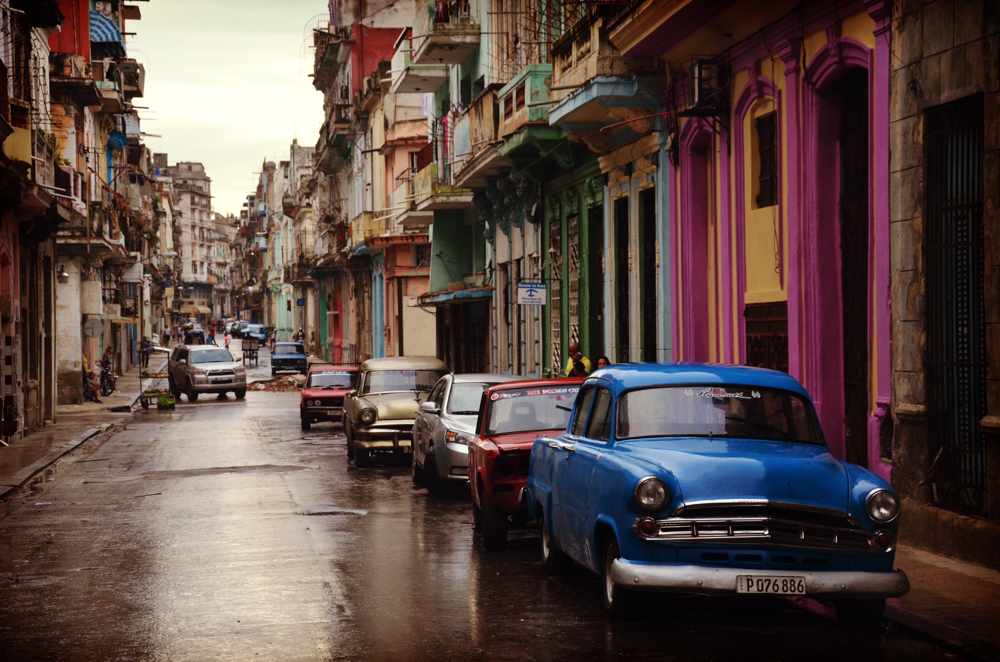
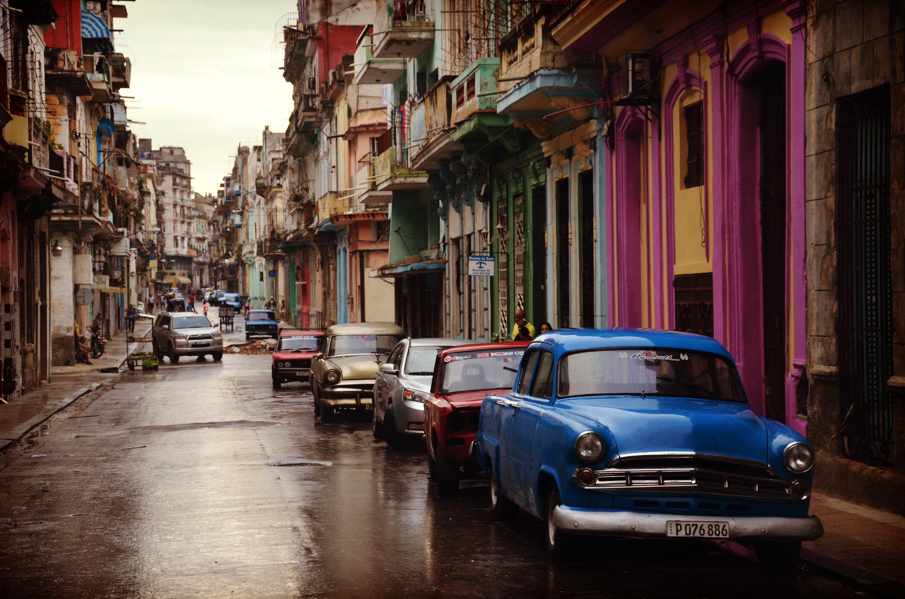

Tentang
Halo! Saya Ferryza Nurwahyu atau yang
sering disapa dengan eja. saya memiliki ketertarikan mendalam dalam dunia fotografi, seni visual, dan teknologi. Sejak
saya masih kecil, lensa kamera telah menjadi jendela saya untuk
melihat keindahan di sekitar. Fotografi tidak hanya menjadi hobbi,
tetapi juga menjadi cara bagi saya untuk mengekspresikan diri dan
menceritakan cerita tanpa kata-kata. Saya percaya bahwa teknologi
dan seni saling melengkapi. Ketertarikan saya pada fotografi telah
memperluas cara pandang saya dalam menciptakan solusi kreatif
dalam dunia teknologi. Saya menemukan bahwa kemampuan membidik dan
mengambil gambar yang kuat membantu saya dalam menciptakan
antarmuka pengguna yang menarik dan komunikatif dalam aplikasi
yang saya kembangkan. Di luar ruang kelas, saya aktif dalam
komunitas fotografi lokal. Saya terlibat dalam berbagai proyek
kolaboratif dengan fotografer-fotografer berpengalaman yang
membantu saya terus tumbuh dalam seni visual ini. Saya juga senang
berbagi pengetahuan saya kepada teman-teman sejawat dan siapapun
yang tertarik untuk belajar lebih dalam tentang fotografi. Saya
percaya bahwa setiap subjek memiliki keindahan tersendiri, dan
saya berusaha untuk menangkap esensi itu melalui kamera saya.
Fotografi bukan hanya tentang mengambil gambar, tetapi juga
tentang bagaimana gambar itu membangkitkan emosi dan menyampaikan
pesan. Saya yakin bahwa kepekaan visual yang saya kembangkan dari
fotografi menjadi aset berharga dalam mengeksplorasi teknologi dan
desain dengan pendekatan yang unik dan berbeda.
Kontak Saya:
+62 81234 5678 90
lumtech
Daftar Pengalaman
- - Bekerja di SONY Pictures (2022 - Sekarang)
- - Freelance di project Marvel Studio (2022 - 2022)
- - Bekerja di Sweet Escape (2018 - 2021)
Project
Berikut merupakan koleksi foto yang saya tangkap melalui hasil lensa kamera saya :


 
